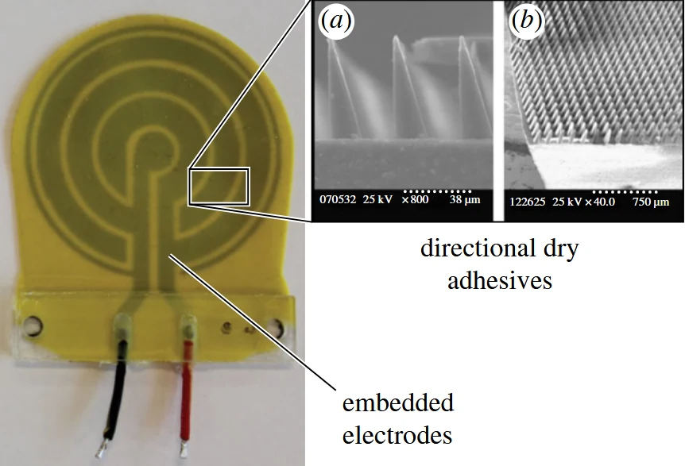

本文目录 · 7 节
一句话精要：EDA 在同一柔性垫内组合静电吸附和方向性微楔：电场帮助建立真实接触，干黏附结构参与承载。其优势是复杂表面的适应性，并非在所有材料上获得最高剪切强度。
{kind=link}

放大查看 ↗· 论文事实、项目启发与待验证事项分开记录。
机制 / 结构如何把动作变成附着
微楔位于表面，电极埋在柔性基体内部。粗糙表面让干黏附有效接触减少，静电吸引能辅助贴合；更好的接触又有利于整体附着。这属于两种机制协同工作，与在两套机制之间机械翻转不同。
论文设置 PDMS、单独静电、单独微楔和 EDA 四类对照。只有把相同表面、相同预载和面积下的结果放在一起，才能判断组合是否带来收益，不能把不同文献的峰值直接排序。
项目启发 / 哪些值得迁移
飞行平台可以把旋翼推力作为候选预载来源，但是否稳定、会否触发反弹仍需测试。借鉴重点是机制拆分对照与表面测试矩阵；高压电源、封装和质量则是选择 EDA 路线时必须纳入的系统成本。
证据 / 参数与测试条件
| 项目 | 原文或精读记录 | 条件与解释 |
|---|---|---|
| 玻璃剪切应力 | EDA 49.0 kPa | Table 3；低于该表 PDMS 60.4、静电 62.0 kPa |
| 粗糙瓷砖示例 | EDA 7.0 kPa；PDMS 0.1 kPa | Table 3 的 rough tile (1)，不是所有瓷砖 |
| 涂漆石膏板 | EDA 15.9 kPa | 对照静电 11.1、微楔 13.4 kPa |
| 供电 | 5 kV DC-DC 转换器 | Fig. 6 测试平台；高电压不等于高电流 |
实验 / 转化为可检查的问题
以下为结合阅读提出的实验建议，尚不代表本项目已完成：
- 保留单材料、单机构和组合机构三类以上对照，使用同一面积和加载方向。
- 同时记录 Ra/Rq、表面材料、是否有织构或孔隙，以及预载方式和重复次数。
边界 / 这些结论不能直接外推
混合机制不保证在光滑面更强；场强、绝缘、接触质量和基底属性都会影响结果。旋翼预载能否替代静电预载，是本项目假设而非该文结论。
关联阅读 / 沿问题继续读
- Liu2026 — 同样从接触形成与多机制协同提高性能，但介质和结构尺度不同。
- Fang2026 — 对比同时协同与按表面选择不同模式的两条路线。
- Pope2017 — 把足端预载来源扩展到整个平台的推力与接触过程。
论文关联地图 · 当前项目记录：光滑面方案仍在筛选，历史干黏附构想不等于已定型方案。
来源 / 阅读记录与原文
整理依据：paperreading：Ruffatto2014_混合粘附、结构概括与项目帮助、实验验证方法。